Ce site utilise des cookies essentiels pour son fonctionnement (formulaire de contact via EmailJS). Aucun cookie publicitaire ou de tracking. En savoir plus
← TravauxÉtude de cas · Product design · App mobile & design system
MyTango : rendre l’app lisible, et donner aux trois produits Tango un seul système.
18 mois chez Tango, opérateur télécom au Luxembourg. Deux parcours clés de l’app, le dashboard de consommation et le shop, ont révélé un design system éclaté. Je l’ai unifié pour l’app, le site et l’espace client.
Mon rôle
Product Designer · UX, UI & design system
Produits
App MyTango · tango.lu · Espace client
Secteur
Télécom · Luxembourg
Période
18 mois
3plateformes sur un même systèmeApp mobile, site e-commerce, espace client
3 → 1fichier Figma de référenceUn seul système à maintenir
Jusqu’à 40 %de vélocité de développement en plusEstimation de l’équipe engineering
🔒Ce case study est partagé sous NDA. Les captures et métriques visibles sont publiques ou anonymisées. Les données internes, fonctionnalités non lancées et informations financières ont été omises.
En bref
Deux parcours clés illisibles, et un design system éclaté derrière.
À mon arrivée, le dashboard de consommation et le shop concentraient les remontées clients. Des jauges que personne ne comprenait, des avantages inclus que personne ne voyait.
En les reprenant, j’ai mis au jour le vrai frein : un design system fragmenté entre trois fichiers Figma, qui n’évoluait plus avec le produit. Mon rôle : traiter ces frictions à la racine, et faire du système une base commune qui évolue avec chaque projet.
01 · Contexte
Une app au centre de la relation client.
MyTango est l’endroit où le client suit sa consommation, gère ses options et contacte Tango. Intégré à une squad produit (PM, lead dev), j’étais responsable de l’UX mobile, de l’expérience web et du design system. Deux parcours concentraient les remontées clients : le dashboard de consommation et le shop.
La squad interne, et les équipes avec qui elle travaille.
Mon rôle : relier la squad à chaque équipe, avec le bon rituel pour chacune.
Squad interne
PM
Product ManagerPriorités et roadmap
JH
Product DesignerMoi · UX, UI, design system
LD
Lead DevFaisabilité et intégration
Handoff
Réunions d’alignementInsights Contentsquare
Ateliers hebdomadairesRéunions d’évolution
EngineeringDéveloppeursApp mobile et web
ExternesAgencesApp et web
Départements internesCustomer experience · Communication · Support · Produit
02 · Cartographier les cas d’usage
Une méthode avant chaque projet : qui, dans quel contexte, avec quels droits.
Avant de dessiner, je cartographie les cas d’usage : qui utilise la fonctionnalité, depuis quel compte, avec quels droits, et ce qui le bloque. Chez Tango, un même compte réunit un titulaire et des lignes rattachées : une même action ne se vit pas de la même façon pour chacun. Cette cartographie fixe les exigences avant le design. Je l’ai appliquée à chaque projet de l’app, du dashboard au shop.
JohnTitulaire du compte, tous les droits
Veut
Gérer sa ligne et celles de sa famille depuis l’app, et savoir ce que son abonnement inclut.
Friction
Basculer sans cesse entre les comptes. Ses avantages inclus restent invisibles, donc inutilisés.
EmilyLigne rattachée, droits restreints
Veut
Savoir ce qui est actif sur sa ligne et ce qu’elle peut faire elle-même.
Friction
Ne sait pas à quels avantages elle a accès, ni ce qu’elle a le droit de modifier.
Personas illustratifs : photos d’illustration, prénoms fictifs.
Exemple sur le shop : de l’exigence à la solution
Exigence
John doit voir ce que son abonnement inclut, et activer en un geste un avantage qui demande une activation, comme Net Protect.
Solution
L’abonnement en tête du shop, les options actives signalées par une puce, et une carte « Inclus, activation requise » avec son bouton.
Itération
Côté Emily : afficher ses avantages sans lui permettre de modifier l’abonnement. De nouvelles exigences pour le système.
03 · Dashboard de consommation
Une donnée principale, le détail à la demande.
Les jauges du dashboard étaient la première source de confusion remontée dans les sondages clients. L’enjeu : rassurer John en un coup d’œil sur ce qui compte pour lui.
Dashboard de consommation · Mobile
Premier écran de l’app MyTango : c’est là que chaque client vérifie sa consommation de data, d’appels et de roaming.
John
veut être rassuré qu’il a bien un forfait illimité.
veut surveiller sa consommation de data mobile pour ne pas dépasser la limite en Europe.
Analyse des sondages clientsData visualisationWorkshop facilitationUI mobile
Problème
Des jauges superposées (forfait, roaming, report, saisonnier), sans hiérarchie. Un point souvent remonté dans les sondages clients.
Exigence
John doit savoir en un coup d’œil s’il est bien en illimité, et retrouver le détail de chaque compteur sans swiper ni chercher.
Réponse design
Un switch unique entre types de données, la donnée principale en avant, le détail à la demande.
Arbitrages
Écarté : garder toutes les jauges sur l’accueil. Exhaustif, mais c’était justement la source de confusion.
Retenu : une donnée principale et un switch Data / Appels-SMS. Le détail par compteur reste à un tap.
Accessibilité
La couleur ne porte jamais seule l’information : chaque jauge est doublée d’une valeur chiffrée.
Le switch reste un contrôle segmenté natif, annoncé avec son état par VoiceOver et TalkBack.
Les textes suivent la taille de police du système sans casser la carte.
Résultat
Validé à l’unanimité par le produit, le Customer experience et le management.
La confusion sur les jauges, remontée dans les sondages, est traitée à la source : une donnée principale, le détail à la demande.
Note App Store améliorée sur la période.
1« Data global » ajouté au libellé pour clarifier ce que mesure la jauge.
2Les multiples jauges sont unifiées en une seule.
3CTA uniformisé. Fondamental UX : cohérence et standards.
1John ne comprend pas pourquoi il voit une jauge alors qu’il est en illimité.
2John doit swiper plusieurs fois pour voir toutes ses jauges. Celles consommées avant la principale sont masquées.
3Bouton peu visible et non uniforme.
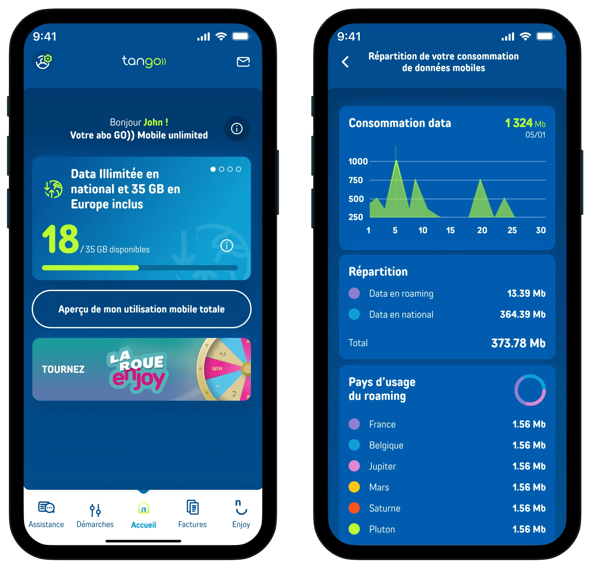
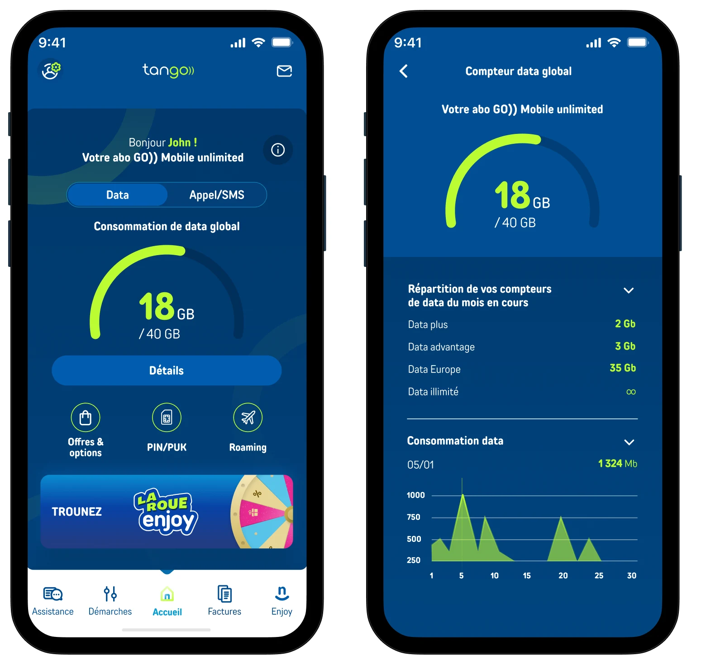
1236451234
6Accessibilité améliorée sur l’ensemble des écrans : meilleur contraste et taille de police augmentée.
4La répartition des données mobiles est affichée pour expliquer la jauge et son total, avec le data illimité signalé par le symbole ∞.
5Le suivi de consommation reste accessible en révélation progressive, pour réduire la charge cognitive.
4La page de détail affiche la consommation sans distinguer le contenu de l’offre, notamment le data national illimité. Charge cognitive élevée.
04 · Shop in-app
Montrer à John ce qu’il a déjà, avant de lui vendre autre chose.
L’abonnement de John inclut Net Protect, une protection pour lui et jusqu’à cinq bénéficiaires. L’ancien shop listait les options comme un catalogue : rien n’indiquait ce qui était actif, ni ce qui était déjà inclus. L’avantage restait inutilisé.
Shop in-app · Offres et avantages inclus
Le Shop de l’app MyTango regroupe l’abonnement, les options et les avantages inclus dans l’offre. Un enjeu qui grandit : 76 % du temps passé sur le numérique se passe désormais dans des apps (eMarketer, 2026).
John
veut voir les offres et changer d’abonnement depuis l’app, sans refaire connexion et achat au passage en webview.
veut savoir quels avantages de son offre sont actifs, et lesquels demandent une activation manuelle.
Emily
veut savoir ce qui est actif sur sa ligne et ce qu’elle peut faire elle-même.
ne doit pas voir d’actions réservées au titulaire du compte.
Architecture de l’informationGestion des étatsRédaction d’exigencesUI mobile
Problème
Un Shop peu engageant et qui convertissait peu. John ne retrouvait ni son offre active ni les avantages inclus, et changer d’abonnement basculait vers tango.lu en webview : reconnexion et parcours d’achat à refaire.
Exigence
John doit voir son abonnement et les avantages qu’il inclut, et activer un avantage comme Net Protect en un geste, sans repasser par une webview.
Réponse design
L’abonnement en tête du Shop, les parcours de changement d’offre et de mobile remontés en premier, les options actives signalées dans chaque catégorie, et les avantages inclus à activer mis en avant. Pour la webview, l’exigence portée à l’équipe : conserver la session et le panier.
Arbitrages
Écarté à court terme : refaire tout l’achat en natif, hors de portée de la feuille de route.
Retenu : remonter les parcours d’achat dans le Shop dès maintenant, et porter l’exigence de session conservée pour la webview.
« Désactiver » en bleu plutôt qu’en rouge : c’est un retour en arrière, pas une erreur ni un danger.
Accessibilité
Les options actives sont signalées par une coche et un libellé, pas uniquement par la couleur.
« Désactiver » garde la taille et la cible tactile d’« Activer » : seule la couleur change, et le libellé reste explicite.
Le contraste du vert Tango et des textes sur fond bleu est vérifié pour rester lisible.
Hypothèses suivies dans le temps
Plus de changements d’offre finalisés dans l’app, moins de bascules vers tango.lu.
Un taux d’activation en hausse pour les avantages inclus, comme Net Protect.
Moins d’abandons entre « Changer mon offre » et la validation.
Moins de contacts support du type « quelle est mon offre, quelles options sont actives ».
Résultat
Un avantage inclus n’est plus un avantage oublié : Net Protect a son propre appel à l’action.
Un même Shop pour le titulaire et le compte secondaire, qui s’adapte aux droits de chacun.
L’exigence de session conservée en webview est portée à l’équipe, avec des indicateurs pour la suivre.
1Rien n’indique l’abonnement en cours : John doit revenir à l’accueil pour savoir quelle offre il a avant d’en changer.
2Net Protect, inclus dans l’offre mais à activer, ressemble à n’importe quelle option payante.
3Changer d’abonnement ou de mobile ouvre tango.lu en webview : le parcours n’est pas récupéré, John doit tout refaire.
4Toutes les options se présentent de la même façon : impossible de voir lesquelles sont déjà actives.
5Activer et désactiver partagent le même bouton vert : rien ne signale qu’une désactivation est un retour en arrière.
1L’abonnement et le nombre d’options actives s’affichent en tête du Shop.
2Une carte « Inclus, activation requise » isole Net Protect, avec le nombre de bénéficiaires et un bouton « Finaliser » direct.
3Changer d’offre, de mobile ou commander une ligne : les parcours à fort engagement sur le site remontent dans le Shop, pour répondre au mobile first.
4Les options actives sont signalées par un badge coché dans leur catégorie et une coche dans la liste ; une option en attente, comme Net Protect, garde un badge vide.
5« Désactiver » passe en bleu : un retour en arrière ne se confond plus avec une activation.
1Rien n’indique l’abonnement d’Emily ni ce qui est déjà actif sur sa ligne.
2Forfait Bloqué+ et Net Protect sont présentés comme des options à prendre, sans dire qu’ils sont déjà actifs.
3Le bouton promet une désactivation, mais la seule façon de retirer l’option est de changer de forfait : d’où l’appel au service client.
1Emily voit son abonnement GO)) Kids Mobile et le nombre d’options actives.
2Forfait bloqué et Net Protect sont signalés comme actifs, avec un badge dans leur catégorie.
3Plus de fausse promesse : la fiche indique que l’option est incluse dans l’abonnement, sans bouton de désactivation.
4Compte secondaire : les actions réservées au titulaire (changer d’offre, de mobile, commander une ligne) n’apparaissent pas.
La rupture
Un problème de design system, visible par le client.
Depuis l’app, tango.lu et l’espace client s’ouvrent en webview. Chacun garde ses propres couleurs, composants et navigation : le client a l’impression de quitter l’application.
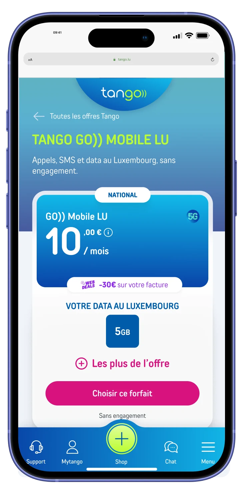
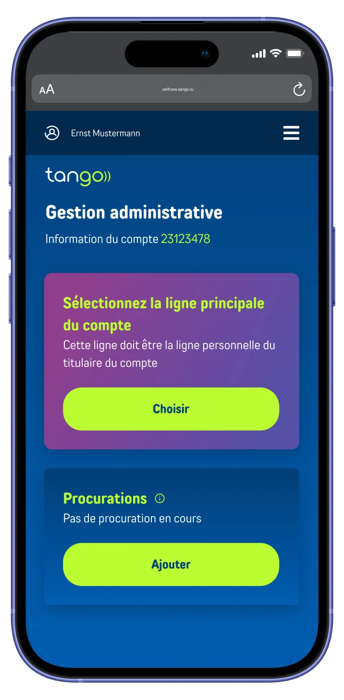
05 · Revoir le design system
Trois fichiers Figma, un seul système.
Le shop a rendu le problème visible. Le système était fragmenté entre trois fichiers Figma, hérités de deux agences : espacements, composants, couleurs et icônes ne correspondaient plus d’une plateforme à l’autre. Les développeurs improvisaient, et chaque nouvel écran ajoutait une variante.
Le problème
Dans l’app, une partie des pages s’ouvrait en webview avec l’interface du site : l’utilisateur avait parfois l’impression d’avoir quitté l’application Tango.
3 plateformes Tango
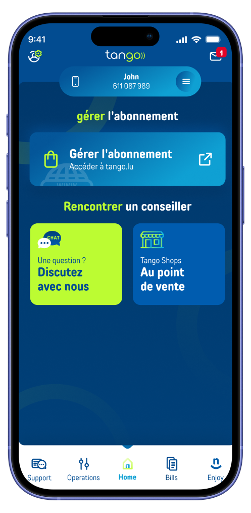
Application mobileSite tango.lu en webview
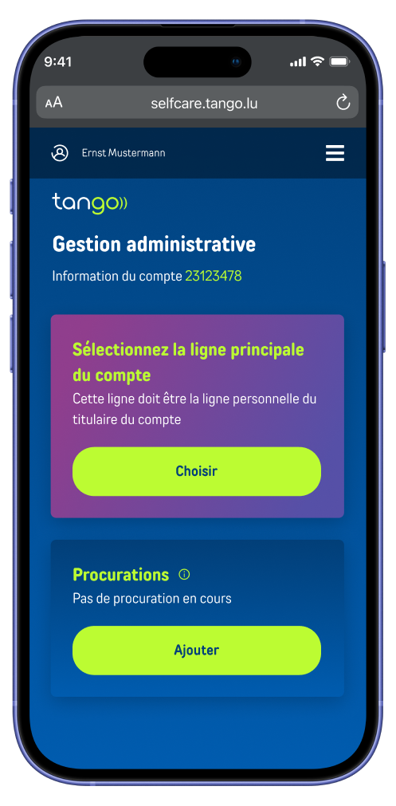
Espace client web
L’audit : inventorier avant de construire
J’ai regroupé les éléments des trois fichiers pour mesurer l’écart : combien de versions d’un même bouton, d’une même couleur, d’un même espacement.
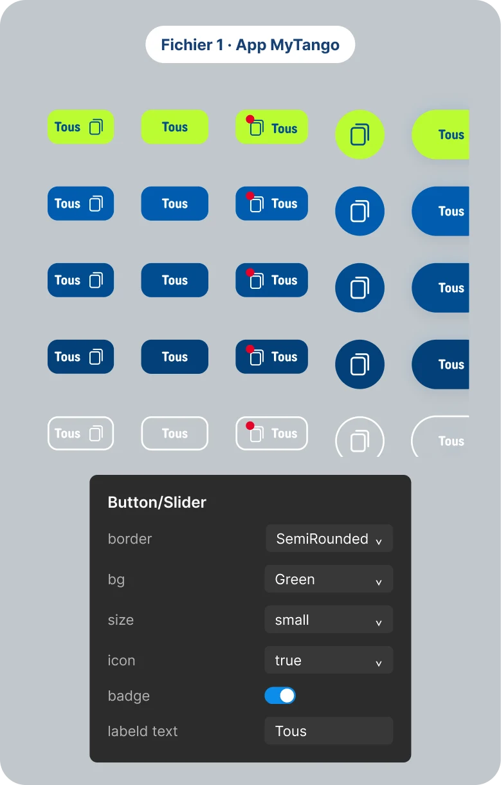
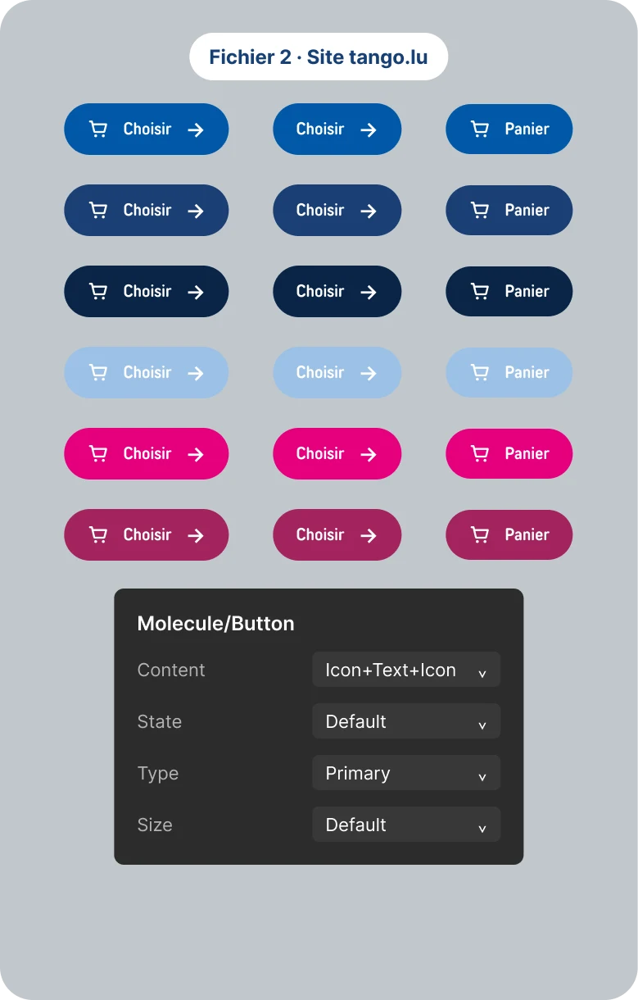
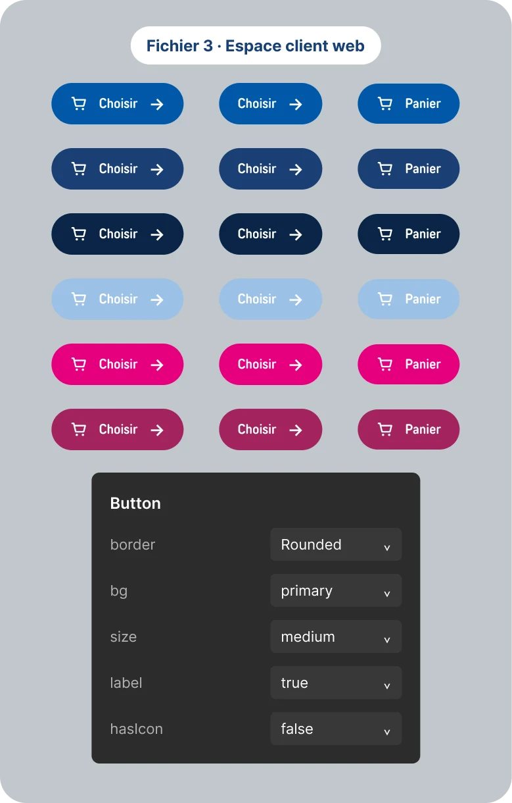
Trois fichiers, trois familles de boutons : couleurs, formes, tailles et propriétés différentes pour une même action.
Couleurs et variables
Sous les composants, chaque fichier avait ses propres couleurs et sa propre nomenclature, parfois incohérente au sein d’un même fichier. tango.lu s’appuyait déjà sur des variables pour certains éléments, comme les rayons. MyTango et l’espace client, conçus par la même agence, partageaient une logique proche et n’en utilisaient aucune.
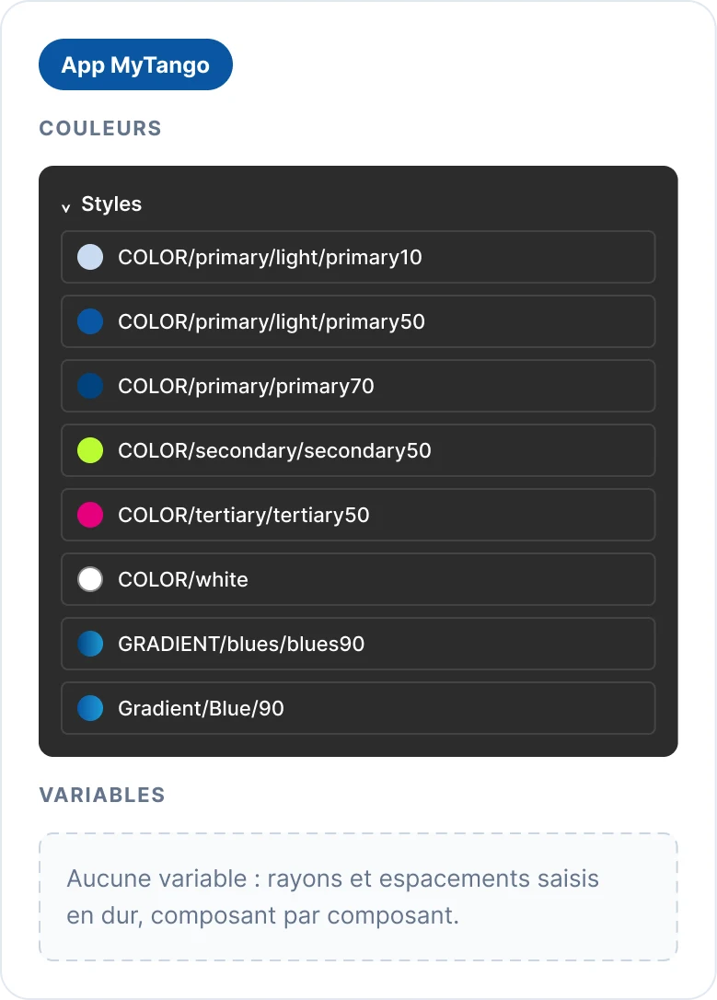
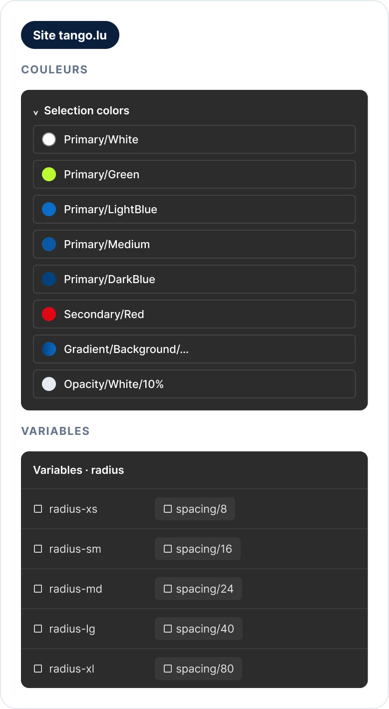
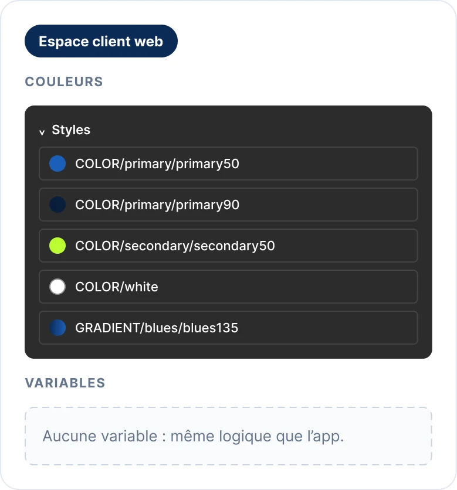
La stratégie : structurer au fil des features
Pas de refonte d’un coup : le produit continuait d’avancer, et le système s’est construit avec lui.
1er mois
50 %Structuration DS
50 %Projets en cours
J’ai structuré le design system progressivement, méthodiquement, feature après feature. La moitié de mon temps servait à regrouper les éléments, comprendre la structure, faire le point avec les équipes engineering, aligner deux fichiers différents, faire évoluer le système avec les projets en cours, documenter et nettoyer peu à peu les anciens écrans et composants. L’autre moitié allait aux sujets en cours.
2e mois et suivants
20 %Structuration DS Documentation
80 %Projets en cours
Sur le long terme, la fondation s’est solidifiée et la documentation est devenue la référence pour tout ce dont les développeurs ont besoin. La structuration est passée à 20 % de mon temps, consacrés à documenter les évolutions et à tenir une mémoire projet.
L’architecture : tokens, composants, écrans
Une fondation commune aux trois plateformes : des tokens pour les couleurs, la typographie et les espacements, puis des composants documentés, assemblés en écrans.
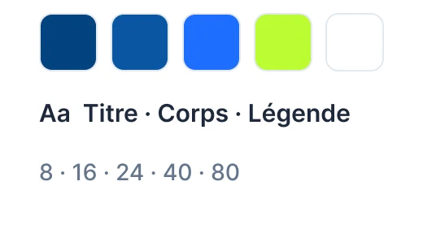
Tokens→
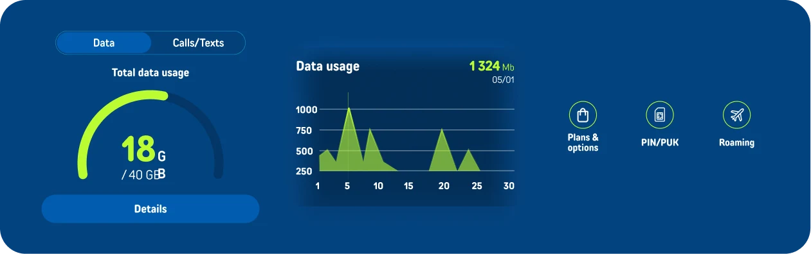
Composants→
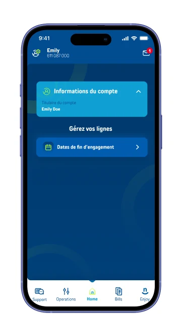
Écrans
Construction d’un composant : le bouton de l’app
Un seul composant, piloté par des propriétés plutôt que par des copies : la forme, le fond, la taille, le libellé, l’icône et le badge se combinent sans créer de nouveau bouton.
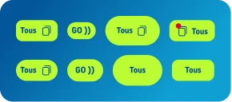
Propriété
Valeurs
border
SemiRounded · Rounded
bg
green · dark-blue · very-dark-blue · light-blue · none
size
small · medium · big
label
true · none
icon
left · right · only · false
badge
true · false
Icon
échange d’instance
Label text
texte libre
La gouvernance : un système qui évolue avec le produit
Réunions d’évolution
Chaque nouveau composant est discuté avec les développeurs avant d’entrer dans la librairie.
Documentation de référence
Specs, états et règles d’usage : la source unique pour tout ce dont l’engineering a besoin.
Mémoire projet
Chaque évolution est tracée, pour savoir pourquoi un composant existe.
Souveraineté
L’équipe interne décide de l’évolution de son système, sans dépendre des agences.
06 · Une même fondation
Une même fondation, des composants propres à chaque plateforme.
Le web et le mobile n’ont pas les mêmes contraintes : leurs composants restent différents. Ce qui devient commun, c’est la base : les mêmes tokens de couleurs, de typographie et d’espacements, les mêmes règles d’usage et une même documentation. Chaque plateforme construit ses composants sur cette fondation.
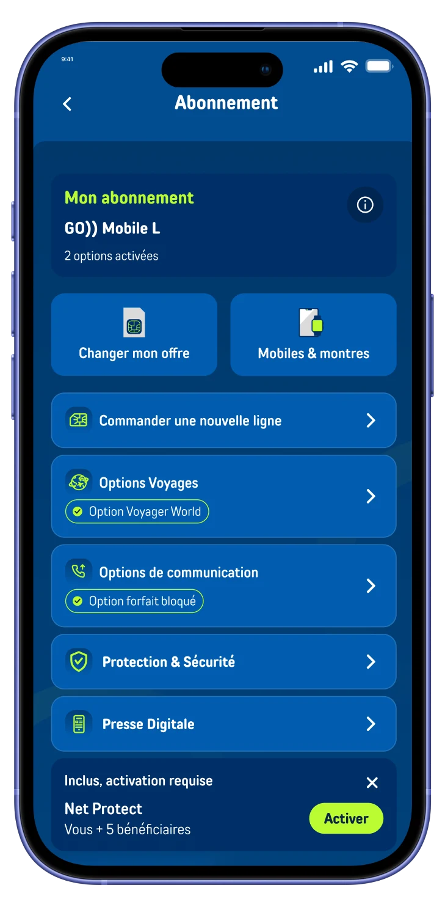
App MyTango · composants mobiles
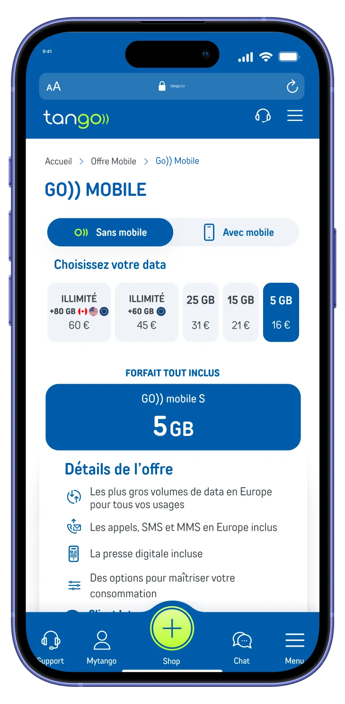
tango.lu · composants web
Une nomenclature commune
Chaque composant renvoie à un rôle, et chaque rôle à une valeur de base. Si Tango change la couleur des actions, tous les boutons suivent, sur l’app, le site et l’espace client.
Couleurs, typographie, espacements, rayons et iconographie suivent cette structure, documentée au même endroit. Le web et le mobile gardent leurs composants, mais parlent la même langue.
La refonte de la page offre de tango.lu fait l’objet d’une étude de cas dédiée.
07 · Impact
Ce que la mission a changé
Dashboard
Validé à l’unanimité
Par le produit, le Customer experience et le management. Note App Store améliorée sur la période.
Shop
L’avantage inclus mis en avant
L’abonnement en tête, les options actives visibles, l’activation de Net Protect à un geste.
Engineering
Jusqu’à 40 % de vélocité
Estimation de l’équipe engineering, visible aussi dans le canal Slack de questions, devenu bien plus calme.
Système
Une seule fondation
Une seule source pour l’app, le site et l’espace client. Une charte de couleurs adoptée progressivement : première étape, supprimer le dégradé bleu du site web.
08 · Avec du recul
Ce que je ferais différemment
Après le premier mois, documenter chaque évolution du design system occupait encore 20 % de mon temps. Aujourd’hui, j’automatiserais cette documentation avec un serveur local connecté à Figma et à une IA.
Automatisé
Une documentation qui se met à jour seule
Specs des composants, états, tokens et changelog générés à partir des fichiers Figma, à chaque évolution.
Humain
Des décisions qui restent à l’équipe
Relecture, arbitrages et règles d’usage restent validés par le design et l’engineering.
Libéré
Du temps rendu au produit
Les 20 % consacrés à la documentation repartent vers la recherche utilisateur et les projets.
Ce case study est partagé sous NDA. Contactez-moi pour un walkthrough complet en appel.